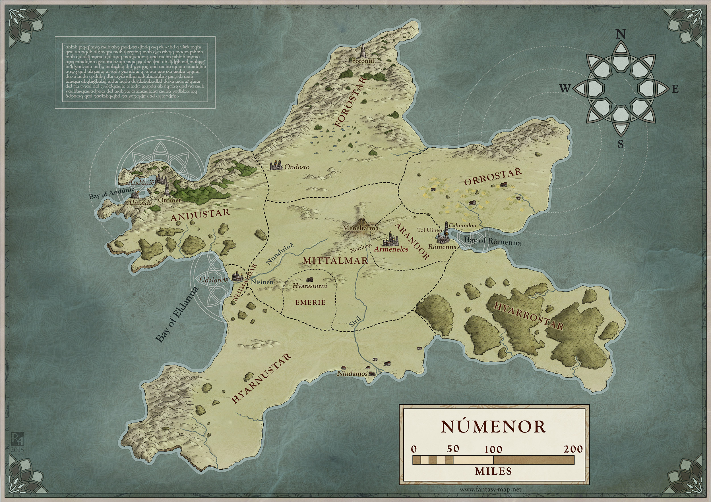

Kara Lord olarak da bilinen Sauron, kendi efendisi Melkor'un görevini tamamlamak üzere Orta Dünya'daki halkların zaaflarından yararlanıp "güç yüzüklerini" yapar.
Üç yüzük göğün altında yaşayan elf krallarına, Yedisi taştan saraylarındaki cüce hükümdarlara, Dokuzu ölümlü insanlara, ölecekler ne yazık; Bir yüzük gölgeler içindeki Mordor Diyarı'nda, Kara tahtında oturan Karanlıklar Efendisi'ne. Hepsine hükmedecek bir yüzük, hepsini o bulacak, Hepsini bir araya getirip, karanlıkta birbirine bağlayacak, Gölgeler içindeki Mordor Diyarı'nda.
Güç Yüzükleri'nin sahipleri kandırıldıklarını anlamıştı fakat iş işten geçmişti.
Elfler, Sauron'a karşı savaş açtı ve Kara Lord, Elflerle büyük bir savaşa girdi. Birçok Elf şehri yok oldu. Daha sonra Elfleri yenemeyeceğini anlayan Sauron bir süre saklandı. Sonra tekrar yüzükten aldığı güçle iyice güçlenen Sauron, çok geçmeden Orklar, Haradrim halkı, Rhûn halkı ve kötülüğün hizmetine girmeye hazır diğer halklarla, Orta Dünya'nın tek hakimi olmak için işgale başladı. Elfler ve insanlardan oluşan ve Son İttifak olarak adlandırılan bir ordu Sauron'u durdurmayı başardı. Parmağındaki tek yüzük İsildur'un eline geçti fakat güce düşkün olan insanlar yüzüğü yok etmedi. Daha sonra yüzük efendisine ihanet etti ve İsildur'un ölümüne sebep oldu. Bir nehrin içinde kayboldu. Böylece unutulmaması gereken değerler unutulup gitti.
Aradan yüzyıllar geçti ve yüzük eski bir Hobbit olan Smeagol'un eline geçti. Sméagol yüzüğü 500 yıl boyunca dumanlı dağların derinliklerinde sakladı. Fakat Bilbo Baggins adlı Hobbit, Gollum'u yüzüğü düşürürken gördü ve onu aldı. Yıllar boyunca Mordor'daki Barad-Dûr'da gücünü yeniden toparlayan Sauron, kötülüğe hizmet eden tüm halkları yeniden birleştirerek tekrar saldırıya geçti. Sauron'un Orta Dünya'yı ele geçirmesi için ihtiyacı olan tek şey yüzüktü.Tüm bu olanların farkında olan İstari'den Gandalf, Elf temsilcisi Elrond'un ülkesinde bir meclis toplamayı başararak yüzüğün yok edilmesi gerektiğine karar verdi. Yüzüğü yok etme görevi ise Frodo Baggins adlı Hobbit'e verildi. Böylece serüven başlamış oldu.
Hikâyenin ilerleyen bölümlerinde, Elrond, Aragorn'a Elendil'in "Narsil" adlı (sadece kralların taşıyacağı) kılıcını verir. Aragorn ona "Andúril (Batının Alevi)" ismini verir. Bilbo Frodo'ya Mithril ve Sting kılıcını verdikten sonra Charadras (Karadras) Geçidi'ne giderler. Saruman dokuz yoldaşı büyüleyerek dağa şimşek çaktırır, üstlerine çığ düşer. Frodo'ya hangi taraftan gitmeleri gerektiğini sorar. Frodo madenlerden gitmeyi seçer. Moria Madenlerine girdiklerinde Khazad-Dûm köprüsü yakınlarında Melkor'un hizmetkarı Balrog yollarını keser. İstari Büyücüsü Gandalf, Balrog'u etkisiz hale getirmesine rağmen Balrog düşerken onu da kırbacıyla çeker. Gandalf'ın Khazad-Dûm köprüsü'nden düşmesinin üzerine Aragorn grubun yeni lideri olur. Lothlorien'e doğru giderler. Kahin gözlü, büyüleyici görünüşü olan Lothlorien'in Hanımı Galadriel ile görüşürler. Galadriel'in eşi Celeborn Sam'e ip, Merry ve Pippin'e keskin bir hançer, Aragorn'a büyüleyici bir hançer, Legolas'a prenslerin soyundan gelenlerin kullandığı özel bir yay, Frodo'ya ise Galadriel aynasını gösterir. Altın saçlarından bir tel isteyen Gimli'ye ise üç tel altın saç verir. Nehirlerin kıyısına varınca Boromir, yüzüğü Frodo'dan almak ister fakat alamaz.Yüzük onu zapt ettikten sonra Boromir keşke olanları değiştirseydim der fakat Aragorn, onun yerine Frodo'yu Mordor'a yollar. Mordor yoluna doğru giden Frodo'nun peşine Sam takılır. Savaş ortaya çıkınca Boromir Uruk-hailar tarafından okla öldürülür. Üç Avcı (Aragorn, Gimli ve Legolas), kardeşlik bozulunca kendilerine yeni bir grup kurup Boromir'i ararlar. Kardeşlik dağılmıştır, Merry ve Pippin, Boromir'in söylediğine göre Isengard'a doğru esir alınmıştır, Sam ve Frodo, Mordor yolundadır, Üç Avcı, Merry ve Pippin'i aramak için yola çıkarlar.
Hikaye Hobbitler,Elfler, İnsanlar , Cüceler , Büyücüler ve Orklar (Hobbit 'te goblinler olarak adlandırılır) ve Karanlık Lord Sauron tarafından yapılan Güç Yüzükleri ile ilgilidir. Hikaye, Shire 'daki sessiz ortamdan başlayarak, Orta Dünya 'ya uzanır ve Yüzük Savaşı 'nın gidişatını takip eder. Ana hikayeyi, her karakteri, yeri, şarkıyı ve kılıcı listeleyen bir dizin içeren altı eklik zengin tarihi ve dilbilimsel arka plan materyali takip eder. Tolkien'in diğer yazıları ile birlikte, Yüzüklerin Efendisi edebi tema ve kökenlerinin kapsamlı bir analizine tabi tutulmuştur. Kendi başına büyük bir çalışma olmasına rağmen, hikaye, Tolkien'in 1917'den bu yana uzun yıllar üzerinde çalıştığı, daha büyük bir mitolojik döngünün veya legendarium un son hareketidir. Bu önceki eser ve Yüzüklerin Efendisi'nin hikayesi üzerindeki etkiler, filoloji, mitoloji ve din ile birlikte eski fantezi çalışmaları ve Tolkien'in I. Dünya Savaşı'ndaki deneyimlerini içerir. Yüzüklerin Efendisi'nin modern fantazi üzerinde büyük bir etkiye sahip olduğu düşünülmektedir ve Tolkien'in eserlerinin etkisi, "Tolkienian" ve "Tolkienesque" kelimelerinin kullanımının Oxford İngilizce Sözlüğü'nde kaydedilmesine neden olmuştur. Yüzüklerin Efendisinin muazzam ve kalıcı popülaritesi, popüler kültürde sayısız referanslara, Tolkien'in eserlerinin hayranları tarafından bir çok topluluğun kurulmasına ve Tolkien ve çalışmaları hakkında çok sayıda kitabın yayınlanmasına yol açmıştır. Yüzüklerin Efendisi kısa öykülerden video oyunlarına, sanat eserlerine ve müzik eserlerine ilham vermiştir.
Arka Hikaye, kitaptaki eylemden binlerce yıl önce, Yüzüklerin Efendisi, Karanlık Efendi Sauron 'un, doğaüstü güçlere sahip olan ve daha sonraları korkunç aleminin (Mordor ) hükümdarı olan kötü niyetli bir reenkarne tanrının yükselişi ile başlamaktadır. Orta Dünya 'nın Birinci Çağı'nın sonunda Sauron, efendisinin, eski Karanlık Efendisi Morgoth Bauglir'in (Melkor , eskiden dünyanın melek güçleri olan Valar 'dan biri olarak sayılıyordu) felaket yenilgisi ve zincirlenişinden kurtulmuştur. İkinci Çağ boyunca, Sauron Orta Dünya 'ya egemen olmak için plan yaptı. "Annatar" veya Hediye Efendisi ismiyle kılık değiştirmiş olarak, Celebrimbor ve Eregion'un diğer Elf demircilerine, kullanıcılarına çeşitli güçler ve etkiler veren büyülü yüzüklerin dövülmesinde yardım etti. Bunların en önemlileri Güç Yüzükleri olan dokuz, yedi ve üç (dokunmadığı veya bilmediği) yüzüklerdir.
Bununla birlikte diğer Güç Yüzüklerini kullananları köleleştirmeyi planladığı, Tek Yüzük 'ü (The One Ring) gizlice dövdü. Bu plan, Elfler ondan haberdar olduklarında ve yüzüklerini çıkardıklarında başarısız oldu. Sauron daha sonra onaltıyı ele geçirdi ve onları Cüceler ve İnsan krallarına dağıtarak bir savaş başlattı. Bu yüzükler sırasıyla Yedi ve Dokuz olarak bilinirdi. Cüce Lordların doğal yapılarında zenginlik arzusu, özellikle de altın olmasına rağmen köleleştirilmeleri oldukça zordu ve bu onlarla diğer ırklar arasında daha fazla çatışmaya neden olmuştur. Dokuz'a sahip olan insanlar zamanla yavaşça bozuldu ve sonunda Sauron'un en korkulan hizmetkarları Nazgûl (Yüzük Tayfları) oldular. Sauron Üç'ü ele geçiremedi ve bunlar elflerin (bunları bağımsız bir şekilde döven) elinde kaldı. Büyük bir ada halkı olan Númenor insanlarının kuşatılmış elflere yardım etmesiyle Sauron güçleri Eriador kıyılarından çekilmiş ve savaş sona ermiştir. Buna rağmen o dönemde Imladris (Rivendell ) ve Lune Körfezi (Gulf of Lune) dışında Orta Dünya'nın büyük kısmını elinde tutuyordu.
1500 yıldan fazla bir süre sonra, Sauron'un “Tüm Dünya'nın Efendisi” unvanını taşıdığı Númenor Kralı Ar-Pharazôn'a ulaşır. Bu Ar-Pharazôn'ı kışkırtır ve Númenor’un şerefini ve gücünü göstermesi için ona bir fırsat verir. Orta Dünya'ya Sauron'un ordularının görünce kaçtığı ezici bir güçle gelir. Kölelerinin terk ettiği Sauron, Númenóreans'a (Númenórlular) teslim olur ve Númenor'a bir "mahkum" olarak götürülür. Sauron daha sonra Númenóreans'ın aklını Valar 'a karşı zehirlemeye başlar. Böylece, Sauron, Númenor'un yok edilmesine yol açan hareketlerine başlamış olur.
unu, Kral'ın zihnini bozarak, ona Elflerin ölümsüzlüğünü Valinor 'un bulunduğu Aman topraklarına ayak basması durumunda alacağını söyler. Yaşlı aklıyla, Ar-Pharazôn, Birinci Çağ'ın sonundan bu yana görülen en büyük ordu ile Aman ve Valinor'u işgal eder. Ancak Aman'a ulaştıklarında o ve ordusu bir heyelan ile toprağa gömülür ve son savaşa kadar (Dagor Dagorath ) orada kalırlar. Arda Kralı Manwë , denizde büyük bir uçurum açan, Númenor'u yok eden ve Ölümsüz Topraklar ı ölümcül dünyadan alan Eru Ilúvatar'ı (Tanrı) çağırır. Númenor'un yokedilmesi, Sauron'un adil ve yakışıklı fiziksel bedenini tahrip eder, ancak ruhuMordor'a döner ve yeni bir biçim alır - siyah, ateşli (ateş olmasa da), sıcak ve korkunç.
100 yıldan fazla bir süre sonra Sauron, Orta Dünya 'ya kaçmayı başaran sürgündeki Númenór halkına (Ar-Pharazôn'ın seferine katılmayan, sadık olanlar) karşı bir saldırı başlatır. Ancak, sürgünlerin (Elendil ve oğulları Isildur ve Anárion başkanlığındaki) hazırlık yapmak için zamanları vardı. Elfler ve İnsanlar, Elf Kralı Gil-galad ile Son İttifak 'ı kurduktan sonra, Mordor 'a karşı yürüdüler ve Dagorlad düzlüklerinde Sauron'u mağlup ettiler ve Barad-dûr'ü kuşattı, bu sırada Anárion öldürüldü. Yedi yıllık kuşatmanın ardından, Sauron'un kendisi sonuçta liderlerle tek başına mücadeleye girmeye zorlandı. Gil-galad ve Elendil, Sauron ile savaşırken öldüler ve Elendil'in kılıcı Narsil, onun altında kırdı. Bununla birlikte, Isildur, Sauron'un elini Narsil'in tepesiyle kesti ve Tek Yüzük'ü aldı. Neticede Sauron'un bedeni yok olarak ruhu kaçtı ve yüzyıllarca korkunç bir biçimde yeniden ortaya çıkmadı. Isildur'a olması gerektiği şekilde Tek Yüzük'ü yok etmesi tavsiye edildi (dövüldüğü Hüküm Dağı 'daki volkana atılarak) fakat Isildur yüzüğün güzelliğine aldandı ve bunu reddetti. Babası ve erkek kardeşinin ölümünün tazminatı olarak yüzüğü sakladı.
Böylece, Orta Dünya'nın Üçüncü Çağ'ı başladı. İki yıl sonra, Isildur ve askerleri Rivendell 'e giderken, Ferah Çayırlar Felaketi adı verilen bir ork grubu tarafından saldırıya uğradılar. Sonundaneredeyse hepsi öldürülürken, Isildur, kullanıcısını görünmez yapan yüğünü kullanarak kaçtı. Ancak, büyük Anduin Nehri 'nde yüzerken orklar tarafından öldürüldü ve yüzük parmağından süzülerek ve nehirde kayboldu. Yüzük iki bin yıl boyunca kayıplara karıştı. Daha sonra Déagol adında bir hobbit tarafından tesadüfen bulundu. Akrabası ve arkadaşı Sméagol, Yüzük için onu boğdu ve anneannesi tarafından evinden kovuldu. Yavaş yavaş solduğu ve Gollum adında iğrenç, sümüksü bir yaratığa dönüştüğü Dumanlı Dağlar 'a kaçtı. Tolkien, Yüzüklerin Efendisi'ndeki olaylardan 60 yıl öncesini konu alan Hobbit 'te yüzüğün başka bir hobbit tarafından görünüşte tesadüfen bulunmasını ve onu evine götürmesini anlatmaktadır. Hikaye harici olarak Yüzüklerin Efendisi'nden önce yazılmıştır ve yazar daha sonra Bilbo 'nun sihirli yüzüğünü Tek Yüzük olarak geliştirmiştir. Ne Bilbo ne de büyücü Gandalf bu noktada Bilbi'nun sihirli yüzüğünün Karanlık Lord Sauron tarafından yapılan Tek Yüzük olduğunu bilmemektedir.